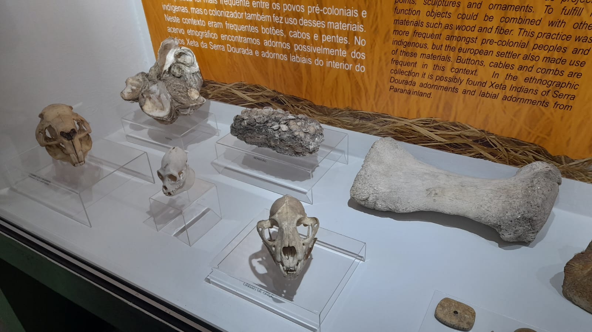

Conforme o Professor Dr. Ivan Furmann, sambaquis são sítios arqueológicos/construção humana pré-histórica amontoado de conchas, moluscos, areias etc.. de muito tempo atrás. Conforme o Professor Dr. Ivan Furmann, os sambaquis, medem, no Brasil, entre 2 e 20 metros de altura, podendo chegar a 100 metros de diâmetro. Conforme o Professor Dr. Ivan Furmann, a palavra “sambaqui” vem de origem tupi-guarani que tem o significado de "montado de conchas”.
Os sambaquis são um tipo de sítio arqueológico pré-histórico. Construídos entre 7000 a 1000 anos AP, esses sítios indicam grupos humanos muito adaptados às condições locais (Figuti, 2023).
Os ecossistemas costeiros são geralmente tidos como ambientes com alta capacidade de suporte embora tenham sido ocupados tardiamente pelo Homem. A adaptação de bandos nômades às condições litorâneas parece ter acarretado grandes mudanças sociais, econômicas e culturais (Figuti, 2023).
A análise das amostras da arqueofauna de três sambaquis oferece um exemplo da natureza da adaptação do homem pré-histórico a esses meios (Figuti, 1993).
Imagem 1 - Ossos
Fonte: Dos Autores
Muito tempo se passou, desde a separação da Pangeia, até que nossa espécie, o Homo sapiens (o homem moderno), estivesse presente na Terra. Em artigo na Revista USP, em 1997, a paleoantropología da Universidade de Cambridge, Marta Mi Razón Lahr, aponta que os primeiros homens surgiram na África entre 200 mil e 100 mil anos atrás, afirmações que levam em conta a ausência de evidências mais antigas do homem moderno fora da África. A partir dessa "origem" tem-se formulado hipóteses de migração para os outros continentes (DELFINA, 2013).
No caso do continente americano, a teoria mais aceita é a de que, há aproximadamente 12 mil anos, os primeiros homens, após se locomover da África para a Ásia, teriam atravessado da Sibéria para o Alasca pelo estreito de Bering, uma faixa de 90 quilômetros que, na última glaciação (período muito frio ocorrido entre 80.000 e 12.000 anos atrás) tornou-se um período adequado l. Essa teoria foi sustentada a partir de 1986 por Joseph Greenberg, Christy Turner II e Stephen Zegura, analisando as semelhanças genéticas, linguísticas e dentárias dos ameríndios com os mongolóides, após a escavação de vários sítios na América do Norte, sendo o mais antigo encontrado até aquele momento, o da cidade de Clóvis, no Novo México, com datação em aproximadamente 11 mil anos (DELFINA, 2023).
Ao longo do tempo, essas poderiam se habitar em diferentes regiões da América, incluindo o Brasil, onde construíram os sítios arqueológicos conhecidos com sambaquis como parte de sua cultura material (DELFINA, 2023)
Os sambaquis são um tipo de sítio arqueológico pré-histórico, encontrados ao longo do litoral brasileiro, principalmente, nas regiões sudeste (estados de São Paulo e Rio de Janeiro) e sul (estados de Santa Catarina e Paraná) (SUGUÍO, 2003).
Por exemplo, na região do Golfo de Nicoya, na Costa Rica, existem montículos feitos de conchas aos sambaquis semelhantes, chamados de "montículos concheros". Esses montículos também foram construídos por homo sapiens que habitavam o local e utilizavam os recursos aquaticos como fonte de alimentação (SUGUÍO, 2003).
Outros exemplos temos os montes de conchas encontrados na região da Colúmbia Britânica, no Canadá, e também em algumas ilhas do Pacífico, como as Ilhas Fiji. Esses montículos foram construídos por comunidades que dependiam da pesca e da coleta de mariscos para sobreviver (SUGUÍO, 2003).
DELFINA, Cristiane. O homem na América: de onde veio? Quando? Como?. ComCiência, n. 152, p. 0-0, 2013. disponivel:http://comciencia.scielo.br/scielo.php?script=sci_arttext&pid=S1519-76542013000800004&lng=en&nrm=is&tlng=pt. acessado em: 1 de mai de 2023
FIGUTI, Levy. O homem pré-histórico, o molusco e o sambaqui: considerações sobre a subsistência dos povos sambaquieiros. Revista do Museu de Arqueologia e Etnologia, v. 3, p. 67-80, 1993. disponível em:https://www.revistas.usp.br/revmae/issue/download/8295/540#page=76. Acessado em: 2 de mai de 2023.
SUGUIO, Kenitiro et al. Idades ao radiocarbono de prováveis sambaquis do litoral nordeste brasileiro. Trabalhos, p. 1-3, 2003. disponível: https://repositorio.usp.br/item/001609525. acesso: 1 de mai de 2023.